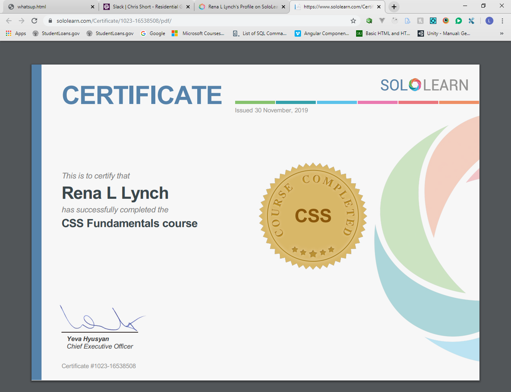
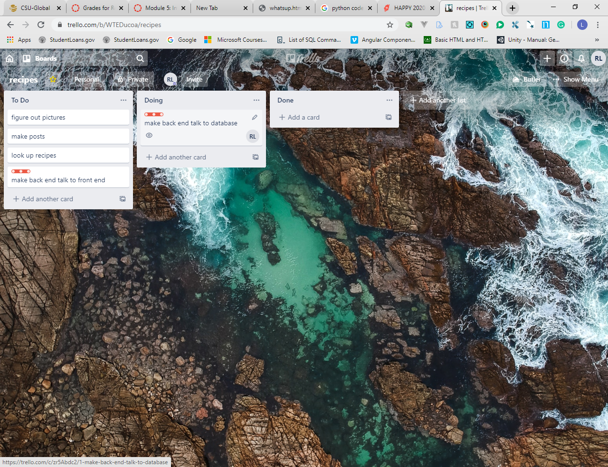
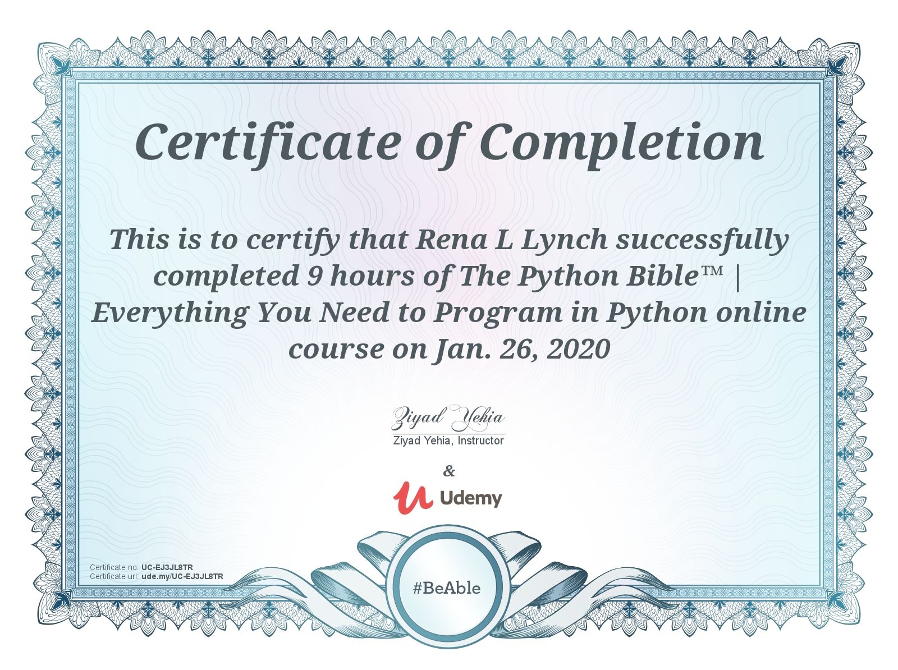

.....Today is the day I started this blog. I am working on sololearn.com. The first thing we are
learning in html, besides tags and page set up is how to blog. The blog is pratice for all that we learn.
I have never done this before and am getting a little ahead of the lesson. It just wanted to have me say a
couple of words in an about section. I decided to have different pages for things. Also
I have already started on my css. As you can see by my home page that I have also set up today as well.
Today I learned about audio and video files. That was GREAT!! I learned something new!!! Now I
just need a reason to use them.
Day 2, Nov 27, 2019
..... Well I decided to blog today. I think I will add to the about page. Ya'll might want to
know something about me.
I coded yesterday. I learned new things in html, and css. I finished a basic html course and started a css one
at sololearn.com.
Well, I finished up with my about page for now. Even included a picture of myself. So now it is off to code. I
decided I should let
you know anything I learn, and if it is significant i think i will start a code page where i can put my newley
found code to refrence.
Day 3, Nov 28, 2019
Yes, I know it is Thanksgiving. HAPPY THANKSGIVING!! I am working today on code and digital
marketing today. As I have come to find out the hard way, if you want your websites to do good you need to know
more than a bootcamp will teach you. Part of that is digital marketing.
I went to WOZ-U a bootcamp for software developers. It was a 9 month school. I have a diploma. I can make
beautiful websites.... I want to grow it into a sustaniable business though. Thats where the marketing comes in
at.
I also need to hone my website skills. I am by no means an expert web designer. I am on my way though...
I think today i will revisit video and audio files. As you can tell my chosen video comes up unavaliable..I am
not sure why and would like to find out.
O.K... I found out more about videos. So I included one from a class project that is narrated by my son.
I hope you like it. It is a video of a dream of mine.
Now on to audio
IT WORKED!!!!!
Day 4, Nov 29, 2019
Well I hope everyone enjoyed there Thanksgiving. We are having ours today. It is still early yet so I am coding.
I just thought that this was neat:
background-size: contain; I knew about cover. It dosent always work the way you want but now I have found
contain!! Lets see how it works:
contain
cover
Well I think that worked beautifully.
GREAT news!!!! I just got my acceptiance letter to Colorado State University Global. CSU Global. This is where I
will be getting
a bachalors degree in computer science. First I will be going through a certificate program I think will help me
out with freelance work in the
long run.
I attended WOZ-U last year. it was good it taught me a lot in a little amount of time. Enough to know I want to
learn more.
...I learned today that css3 has natual animations. You just name them and make them up. ex: Hover over this
square:
YES!! I finished Sololearn"s css fundamentals course and got my certificate!! YAY!!

Day 5, Nov 30, 2019
Today I started off by moving my Blog folder to GitHub. https://github.com
. It is a place in computerLand where your code is stored. It keeps a master copy of your code and you can make
changes to it in branches.
Once you decide the branch wont mess anything up you can commit it to the master. Not that that is all it does,
but thats kinda an explnation.
Well the next thing I was going to do at solo learn was javascript. The class I start with at CSU Global starts with Python. So I am going to start on that
today to try to get a head start on it. I have no prior knowledge of Python.
Sooo... Here's whats up so far. Sololearn started out like I knew something about Python. So I had to go to Udemy. I Love Udemy.
This is the class I chose https://www.udemy.com/course/python-for-absolute-beginners-u It is great for beginners cause it shows you where to start from.
It starts with downloading Python then a text editor for it. Then it shows you how to use the text editor. A text editor is what you use to write code in. I usually use visual studio code but for python I am using
JetBrains PyCharm Community Edition. I have just finished my first lesson. I will let you know how it goes.
Well it has been going great. I can say that I have learned a lot in a very understandable format. only 30% done with class but i highly reccomend it.
I got as far as getting things to populate into the terminal. Still when you get there your pretty proud of yourself.
Well I think I am done for now. Ive gone over a lot of material. I think it will have helped me a lot to have taken this course.
Day 6, Dec 1, 2019
Today I finished my Udemy class Python 101 for beginners. I thimk it was a great class!! I went ahead and startedon the sololearn
class today. I learned Enough from udemy to tackle it. So far so goood. I learned to much to share with you. I would advise taking
the Udemy course. I have been up since 1:30 am and am on the end of my second pot of coffee. I think I need a break from code for a bit.
...So I think I will work on my projects page a little. Well managed to take care of that. There are now videos of my
work on my projects page. I hope ya'll enjoy my work. Well I have been at it pretty much all day. It is time to call it a day. I may design some,
I wouldnt mind playing around with some design for a bit though.
These are examples of gradients you can make
Day 7, Dec 4, 2019
I know it has been a few day, things get hectic you know... I am just startin out in code today , not quite sure what I am gonna be working on just yet. I did decide to add some more code
to the code page. It is a responsive code I use with all my whackadoodle stuff that wont act right. Like pictures for example. Speaking of responsiveness i have got to work on that. I havent done anything to make this site responsive yet. It will get there though.
Well I studied a little at sololearn. I have also added a dropdown date menu
for this page to make it easier to navigate. I also filled out some stuff for CSU Global. Then I navigated there site taking a look around and getting
familiar with it. I start in 5 days.
Day 8, Dec 12, 2019
Well school has started. There is going to be a lot of writing involved. I am starting out in the python language.
my first assignment is to make a mouse in code. How kool. Admittedly, I havent been coding much lately, reading mostly.
coding will come though.
Day 9, Dec 13, 2019
Today I coded a mouse in python. I guess not a big deal, but fun. I like making shapes and things in python.
I also learned escape in python. I will try to explane escap a bit... When you print something in python it looks like this: print('Hello There')
...That will print out hello there but say you wanted a \ in there, you would have to put another set of quotes around it in order for it to be printed as a \ because python thinks that \ is a symbol
so , for python to know its not a symbol, You just put quotes around it and it should go ahead and work.
School is going well I think. There is a lot of reading involved some coding. Python seems to flow smoothly.
So far I like it. I am going to try to find more time to code. Right now still at the basics. learned about strings and variables.
How to take in input for them. Only how to show output in console though. I hope that we develop a full stack app
while in CSU Global. I have a few apps that I need to be working on. I need to finish the Happy Furrbabies website. Make a recepie
app, I have the database set up for it. I really need to do a professional portfolio website. I need more time in the day!!
Day 10, Dec 19, 2019
School is 2 weeks in. Not so bad. Grades are good so far. Still in python and web development.
I love Python. It is very simple and stright forward. I highly recomend it as a language to start out with.
I havent learned any libarys or frameworks yet, but so far so good.
Day 11, Jan 11, 2020
Well, I cannot understand why I have been away so long. Granted there is school , work, and everyday life going on
but I really need to dedicate more time to this. I think it is kind of lifeless to only tell you of theory.
Right now I am doing a lot of theory.
I checked over my "in process" websites. I was very upset to learn that one was broken. One needs to be reconnected
to a ddatabase. The other just needs work. I need to set up a Trello board for each project. A Trello board helps
you keep track of your project tasks. What they are, Where you are at with them, and When they are finished.I also
have 2 final projects due in 3 weeks. I think I will start with the Trello boards first. This will also give me
a chance to gather my thoughts about each website. This is an example of a Trello Board:

Day 12, Jan 29, 2020
So I have completed "The python Bible"by Ziyad on Udemy. Here is a look at it  It was a lot of work, I am really proud of learning a new language. We are still taking the class at school.
I would never have made it through without Udemy.
Day 13, Feb 8, 2020
Well todaty marks the end of the first set of classes at school. I currently have a 97.8 average!!! I am so excited!! I have learned so much.
I learned that python is an object orientated Prograam. So best as I understand, everything is an object and you add functionality to ti.
I also made a new website. Hope yall like it. It is in the projects page.
Day 14, Feb 16, 2020
So, I have started on the second round of classes. Human computer interaction and Intro to JavaScript.
The first class about how design plays a role in all things that we do, including and beyond computers.
Day 15, April 1, 2020
I promised myself when I started this blog that there would be no personal opnions or stories that were very long.
As I sit here with close personal greef during the middle of the covid-19 outbreak eating a 1/2 gallon of ice creame
I wonder if I may be wrong. I'm not going into the details of what has happned, just that they have been life changing.
So the problem I face now is staying focused. I am beginning to wonder if I will ever code again. We will see...
Day 16, May 5, 2020
Hello ALL!! I am proud to say that I am coding agian.
Things are going well. Sorry about the last post but I am going to let it stand.
I am back in school. Taking a Social Media Certification class.
Also am going to the bootcamp Praticum by Yandex. It is very hard,
it seems advanced. Just what I need!! I am working very hard
on both. I have also started a business. I am proud to say
that (we will call him "J" for now) J and I will be working
together in this venture. I will be responsibel for front-end
and he will be responsible for back-end. As a team I think we
can form a strong business aliance for ourselves. I will also
be responsible for finding business and SEO pratices if anyone so choses.
Oh by the way the company is called Lynch Web Design and Digital
Marketing.
Day 17, October 8, 2020
Well I have started school agian where I had withdrewen in the spring. I have also restarted my recipe app.
all i have is a bavkend setup so far, but at least that is progress.